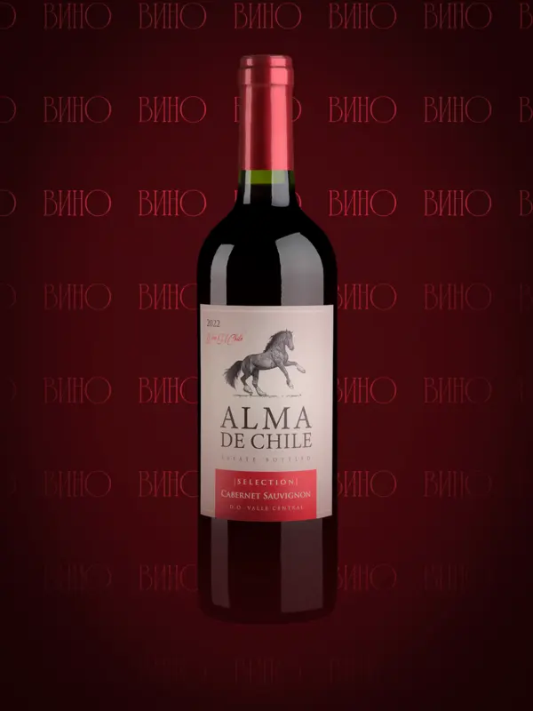

ДОСТАВКА ВИНА МОСКВА
Доставка вина по Москве за 20 минут
Планируете ужин, встречу или просто хотите бутылку вина к вечеру? АлкоМосква привезёт Cabernet Sauvignon, Chianti, Malbec, Mosel, Pinot и Sauvignon Blanc по всей Москве за 20–40 минут — круглосуточно. Добавьте вино в корзину и позвоните +7 (495) 095-95-99. Оплата при получении, минимальный заказ — 1 500 ₽.

Chianti

Malbec

Mosel

Pinot

Sauvignon Blanc
Как заказать доставку вина в Москве
Выберите бутылку на этой странице, нажмите «В корзину», затем «Оформить — позвонить» и продиктуйте список оператору по телефону +7 (495) 095-99. Или просто позвоните и назовите вино и адрес. Оператор подтвердит заказ за пару минут, курьер выезжает сразу. Среднее время доставки внутри МКАД — 20–40 минут, в часы пик — до 60 минут. Если вино нужно срочно к ужину или встрече — звоните, всё решим.
Что привезём: красное и белое вино
В разделе вина — шесть позиций: Cabernet Sauvignon — насыщенное красное, Chianti — итальянское красное, Malbec — сочное красное, Mosel — лёгкое белое, Pinot — элегантное, Sauvignon Blanc — свежее белое. Весь алкоголь оригинальный, с акцизными марками, от проверенных поставщиков. К вину можно добавить закуски, бокалы, лёд и другие напитки — всё в одной доставке. Если нужного вина нет в списке, позвоните: привезём то, чего нет в каталоге, и подскажем по выбору.
Зоны доставки и сроки
Доставляем по всей Москве в пределах МКАД: ЦАО, САО, СВАО, ВАО, ЮВАО, ЮАО, ЮЗАО, ЗАО, СЗАО. По центру — 20–30 минут, на окраинах — до 60 минут. За МКАД (Новая Москва, Зеленоград, ближнее Подмосковье) — по предоплате. Доставка внутри МКАД бесплатна при заказе от 3 000 ₽, минимальный заказ — 1 500 ₽. Работаем 24/7, включая праздники. Ночная доставка вина по Москве — наша специализация.
Оплата и проверка товара
Оплата при получении: наличными или картой курьеру. Предоплата внутри МКАД не нужна. Проверьте бутылку до оплаты: целостность, акцизная марка, срок годности. Если что-то не так — звоните +7 (495) 095-95-99, заменим или подберём аналог.
h2
К вину отлично подходят закуски, бокалы, лёд и другие напитки — всё привезём в одной доставке. Если вы собираете набор для ужина, встречи с друзьями, винной дегустации или праздника, позвоните +7 (495) 095-99: подскажем по выбору, рассчитаем стоимость и доставим за 20 минут. Работаем круглосуточно, поэтому вино можно заказать даже ночью.
Частые вопросы
За сколько привезёте вино?
20–40 минут внутри МКАД. В часы пик — до 60 минут.
Сколько стоит доставка?
Бесплатно от 3 000 ₽ внутри МКАД. Минимальный заказ — 1 500 ₽.
Работаете ли вы ночью?
Да, 24/7, включая праздники.
Как оплатить?
При получении наличными или картой.
Что если нужного вина нет в каталоге?
Позвоните +7 (495) 095-95-99 — привезём под заказ.